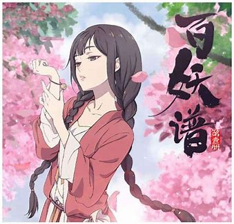
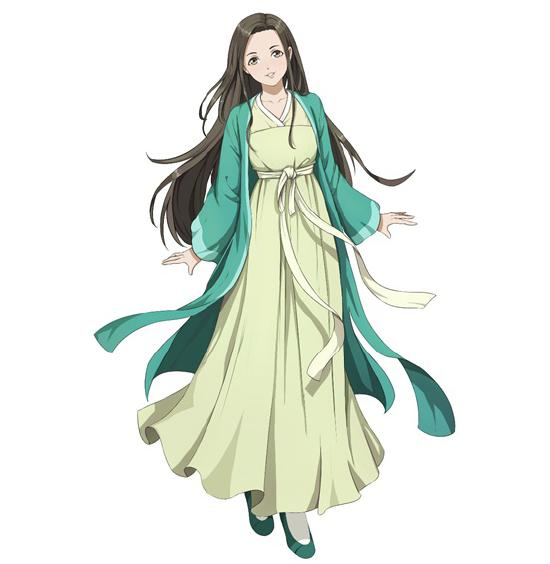
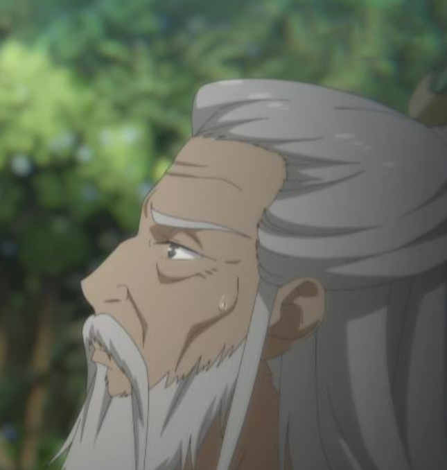
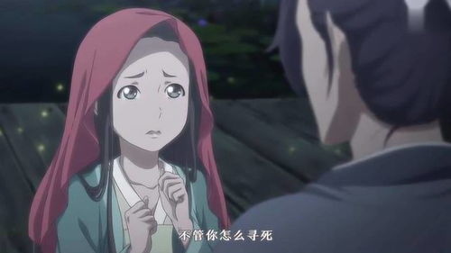

Welcome to
百妖谱主题站
-- 百妖谱*应声
“何必低到尘埃里。” “昨夜枕边人，今日不相识。人情凉薄，不过如此。” “若当一只应声虫就能留住想 留住的东西，那活着也未免太容易了呢”
-- 百妖谱
世有一虫。幼时隐于水，成虫后出水，寿极短，朝生暮死。，称浮游。
百妖谱*拈花
世上不知有多少人想要重来一次，可又有多少人知道，拈花是一种幸运，也是漫长的惩罚
朝霞
绚丽多彩，是因为她紧紧拥抱着初升的太阳。
-- 百妖谱-漱金
漱金鸟不忍看到朱母日夜煎熬，便出了门，去寻找朱小宝，寻人很容易，可难的是，那个人已经死了，朱小宝守着一沓还没来得及带回家的票子死在了无人收尸的战场。 活了一千多年，漱金鸟从未如此近距离地感受过人类的悲欢，这一刻，他动容了。它做了一个决定，附在朱小宝身上，替他找回曾经的快乐。
他以朱小宝的名义回了家，从此以后，除了打零工赚钱养家，其他的时间他都陪在朱母身边。他可是漱金鸟啊，随便吐一块金子就够他们母子好多年的开销了，可他还是坚持以朱小宝的方式挣钱。 母亲喜欢折纸，他就不惜花重金去学习更精巧的折纸技艺，只要母亲开心，他做什么都心甘情愿。
漱金鸟不忍看到朱母日夜煎熬，便出了门，去寻找朱小宝，寻人很容易，可难的是，那个人已经死了，朱小宝守着一沓还没来得及带回家的票子死在了无人收尸的战场。 活了一千多年，漱金鸟从未如此近距离地感受过人类的悲欢，这一刻，他动容了。它做了一个决定，附在朱小宝身上，替他找回曾经的快乐。
他以朱小宝的名义回了家，从此以后，除了打零工赚钱养家，其他的时间他都陪在朱母身边。他可是漱金鸟啊，随便吐一块金子就够他们母子好多年的开销了，可他还是坚持以朱小宝的方式挣钱。 母亲喜欢折纸，他就不惜花重金去学习更精巧的折纸技艺，只要母亲开心，他做什么都心甘情愿。
友情链接
主要人物:
-

桃夭
桃都灵医，百妖谱的看守者。 百妖谱丢失后与磨牙、柳公子离开桃都云游寻找百妖谱。 在京城帮助司狂澜救出被虚耗困住的司静渊后带着同伴住进司府。 -

磨牙
从小就在金佛寺长大。 金佛寺遇难之后灵医桃夭将其救出并收养了他，与桃夭一起生活在桃都。 身体不再长大，后离开桃都与桃夭、柳公子一起云游。 -

柳公子
生活在桃都的蛇妖，桃夭的邻居。 想吃掉桃夭从金佛寺救出的和尚磨牙。 为此与桃夭协定为桃夭做一百件事后将磨牙吃掉。
《百妖谱·庆忌》
一个人在那个地方孤单地呆了五十年 ，就为了守着一个承诺 。如今，一直等待的那个人却永远都不可能再来了
一个人真正开心的时候，笑容会发光的。
朝生，暮死。众生皆如此，可否不辜负
我救的不是他， 我救的是多年前一个寒夜里， 在篝火与烈酒中想仗剑江湖的少年。 都为鱼肉，不过是砧板不同罢了。 可是想快意潇洒，先得比任何人都强大。 总有一天，我要变成最厉害的侠客，那样就能保护曾经如你我一般的无辜弱小，让他们不用在面对乱世的绝望。如果你是人就好了，咱们当兄弟，结伴去每个有趣的地方，一起喝酒吃肉，仗剑江湖。 四十年原来那么长，长到可以改变一个少年，以及他笃信的梦想


